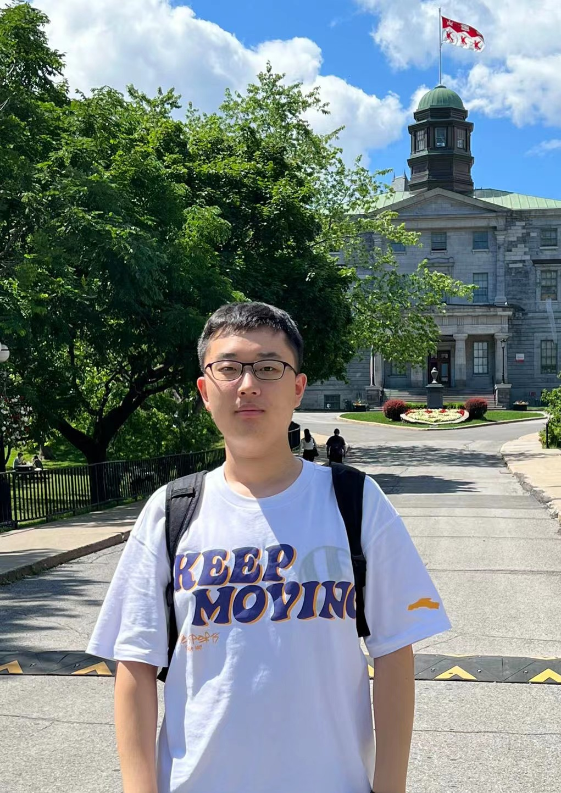

|
 |
Hanxun Yu (于瀚勋)
Undergraduate Student (graduating in 2023). School of Computer Science, Wuhan University (WHU), China. Email: hanxun_yu@whu.edu.cn hanxunyu828@gmail.com Wechat: hanxunyu828 Curriculum Vitae |
Hello! I am a fourth year CS undergraduate in
Wuhan University, expected to graduate in 2023. I will be a master student in Zhejiang University supervised by Prof. Jianke Zhu.
I am fortunately to conduct my research under the supervision of
Prof. Zheng Wang . Here is my Curriculum Vitae.
Currently I am doing my summer research internship in-person at McGill University and Mila - Quebec AI Institute in Montreal, Canada, under the supervision of Prof. Xujie Si.
Prior to that, I was a remote visit student at KAIST, Korea, supervised by Prof. Chang D. Yoo.
My research interests mainly lie at the intersection of computer vision and machine learning, specifically on attacking object detection model by using kinds of adversarial examples. Currently I am doing research about developing unsupervised learning methods
to conduct program repair tasks automatically in McGill University. Another project I am doing now is about generating aesthetic and well-attacking QR
code for digital and physical attack. I am always open to new topics!
Machine Learning
Adversarial Example
Program Repair
ACM Multimedia 2023, under review.
Hui Wei*, Hanxun Yu*, Kewei Zhang, Zhixiang Wang, Jianke Zhu, Zheng Wang
Download [PDF]
IEEE Transactions on Multimedia, under review.
Hui Wei, Hanxun Yu, Zhixiang Wang, Shin'ichi Satoh, Hao Tang, Zheng Wang
Download [PDF]
Hui Wei, Hao Tang, Xuemei Jia, Hanxun Yu, Zhubo Li, Zhixiang Wang, Shin'ichi Satoh, Zheng Wang
Download [PDF]
Research Intern
Advisor: Xujie Si
Topic: Unsupervised Learning Methods for Program Repair Tasks Automatically.
Research Intern
Advisor: Zheng Wang
Topic: Generating Stylized Adversarial Patches towards Physical Attacks
Remote Visit Student [Certificate]
Advisor: Chang D. Yoo
Topic: Study of Uncertainty in Bayesian Neural Network Prediction.
Algorithm Engineering Intern
2022. National Scholarship (国家奖学金)
2020,2021,2022. First-Class Scholarship of Excellent Undergraduate Student (5%) (武汉大学优秀学生甲等奖学金)
2022. Mitacs-CSC Globalink Research Internship Scholarship for 3 Months (加拿大Miatcs-CSC合作国家公派留学实习奖学金-3个月)
2022. First Prize in Chinese Undergraduate Computer Design Contest (中国大学生计算机设计大赛中南地区一等奖)
2022. Provincial Silver Award of 'Internet+' Innovation and Entrepreneurship Competition ("互联网+"创新创业大赛湖北省银奖)
2022. Provincial Silver Award of The ”Challenge Cup” (“挑战杯”大学生创业竞赛湖北省银奖)
2022. Second Prize in National University IOT Contest(全国大学生物联网设计竞赛华中地区二等奖)
Python (Pytorch, Numpy, Scipy, etc.), Java, C++
Linux, Windows
Animals, Music, Basketball, Hot food